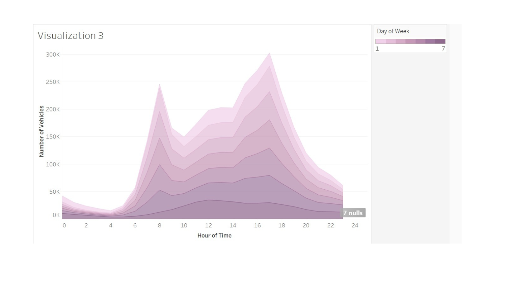

The visualization3 provides a clear picture of the characteristics corresponding to the query we put forward for the data set we selected, and we can quickly distinguish the most advantageous time to operate a vehicle on a specific day of the week. The hourly trends unravel some interesting accident facts as shown in Figure., the graph shows the number of crashes by day of the week and by hour of the day. As seen, there are more incidents on weekdays than on weekends, this may due to that on work days people are going out for work resulting more drivers on the road, which increase the risk for traffic accidents. There are also several peaks emerge, but the strongest is associated with the workweek at 8 and between hours 15 and 17, which are rush hours in a day when it has the most traffic moving such as people leaving for/from work. The rate of accident is observed to increase from Monday to Friday and decline over the weekends.
